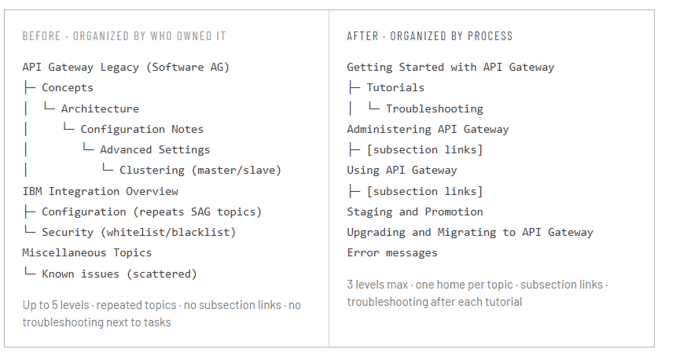
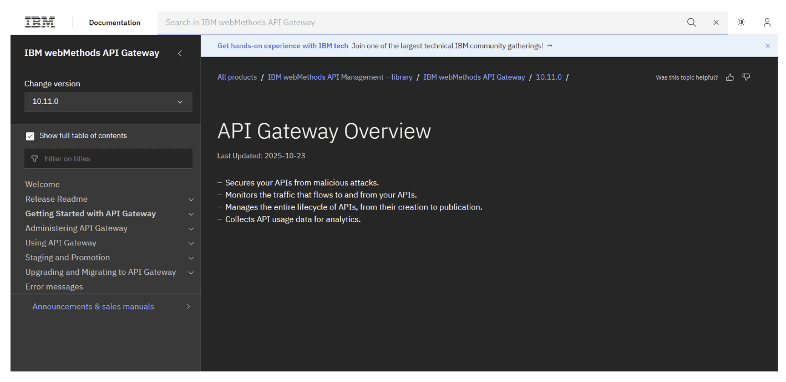

Documentation restructure post- merger: rebuilding information architecture for scannability
- ROLE
- Content Designer/ UX Writer
- compANY
- Software AG, through the merger with IBM
- SCOPE
- webMethods suite documentation
- year
- 1 month
Problem
When Software AG merged with IBM, I inherited two sets of documentation, written by two companies. Software AG's docs were organized around how the engineering teams had built the product. IBM's followed its own conventions. Neither was wrong on its own, but stitched together into one product library they gave users two different logics.
Users told us they could not find things. I audited the whole set, rebuilt it around the way people actually do the work, and got four very different teams to sign off on it.
The feedback and support tickets kept coming back to the same six issues:
Honestly, most of these problems existed before the merger. The merger just made all of them worse at the same time, and it made them impossible to ignore.
Process
How I figured out what was actually wrong
"The docs are hard to use" isn't something you can fix. So I started with a content audit.
I went through the API Gateway guides page by page and logged four things for each one: what it covered, where it lived, how deep it was nested, how easy the instructions were to follow, and whether another page already said the same thing.
That spreadsheet turned a vague complaint into a list of specific problems I could point at. It also changed how my stakeholder conversations went. I could show them that a single configuration topic existed in three places, or that a tutorial users relied on was five clicks deep
The rules I rebuilt it with
Once the audit was done, I wrote down a handful of rules so every decision after that point had something to check against:
- Organize by process, not by owner: Topics follow the order people actually do the work in, that is, get started, administer, use, promote, upgrade. Which team or which company wrote the page doesn't matter to the reader.
- Three levels at maximum: If a topic needs a fourth level to find a home, the structure above it is wrong.
- Say it once, link to it everywhere else: Every topic gets one canonical page. Other pages point to it instead of re-explaining it.
- Put help where people get stuck: Troubleshooting lives right after the task it supports, not in a separate corner of the site.
- Write for everyone: Inclusive, accessible terminology by default, in the documentation and in product copy.
Each group knew something about the docs that I didn't, and each one also had limits I had to design around.
The biggest constraint: The platform's URL and content-management structure couldn't change without a lot of engineering effort. So, I had to fit the new architecture inside the existing system. Instead of new URLs, removed pages redirect to their canonical topic.
Getting everyone to agree took some back and forth. What helped most was the audit. It is hard to argue for keeping three copies of the same page when they're sitting next to each other in a spreadsheet.
Before and after structure
What I found and what I changed
The difference goes deeper than labels. Someone new lands in Getting Started and finds a troubleshooting section right after the tutorial they're following. Someone running the product day to day goes to Administering and sees every subsection up front. Every top-level heading now answers a question a user might actually have.


What changed
The thing I'm proudest of is that the structure stuck. Other teams across the webMethods suite started using it as the model for their own product docs, long after my part of the restructure was done.
- Answers are faster to find. Every topic has one home, it's never more than three levels deep, and it sits next to the topics it belongs with.
- Search works better. Grouping related concepts by process means search results land on complete answers, not fragments.
- Less to read, less to decide. Cutting the repeated topics and 40+ redundant visuals made pages shorter and easier to scan.
- Fewer dead ends. Troubleshooting after each tutorial gives users a next step when something breaks, and gives support a stable page to link to. Support pointed to fewer tickets about getting-started errors after launch.
- Language that includes everyone. Outdated terms are gone, and the replacements became the default for new content.
What I would do differently:
We didn't have analytics set up before the restructure, so I can't give you a clean before-and-after number for time-to-answer or ticket volume. Next time, I'd set a baseline before touching anything: search success rate, time on page for the top tasks, and ticket counts by topic. The direction was obvious here. The numbers would have made it undeniable.